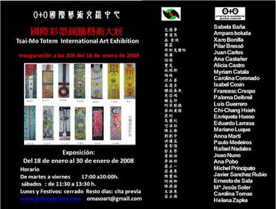
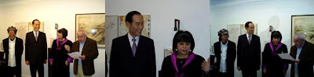

Exposición del 18/01/2008 a 30/01/2008
viernes, 18 de enero de 2008
{kind=link}

{kind=link}

Presentación por el Presidente del Grupo "Tsai Mo Internacional"Huang, Chao-Hu
En los años 50, algunos jóvenes artistas taiwaneses, como Ciao Xin, fueron a estudiar a España. Desde allí mandaron información sobre lo que estaba ocurriendo a nivel artístico en Europa para que ésta fuese publicada en Taiwan y así ayudar a desarrollar el arte contemporáneo taiwanés. Más tarde se produjeron manifestaciones en contra del tradicionalismo. Hoy en día, son muchos los artistas que deciden ampliar sus estudios en España y al regresar, a través de la enseñanza comparten lo aprendido y fomentan el intercambio cultural internacional. En los años 80 fui seleccionado para participar en la Bienal de Sevilla. A partir de entonces organicé actividades para promover el intercambio cultural con Asia: en los años 90 organicé la exposición para el intercambio cultural entre Occidente y Oriente. Desde entonces cada año organizo la exposición de arte "Tasi Mo Internacional" en Taiwan.Para impulsar el intercambio cultural internacional se necesita mucha energía y fortaleza. Doña Enriqueta Hueso y "Gestión Cultural O+O" para promover actividades que hagan posible este intercambio. Yo y el resto del Grupo "Tasi Mo Internacional" queremos felicitar a "Gestión Cultural O+O" y, esperamos recorrer juntos el camino que haga posible nuestro deseo común por el Arte del Mundo y os deseamos muchos éxitos.Presidente del Grupo "Tsai Mo Internacional"Huang, Chao-Hu
{kind=link}